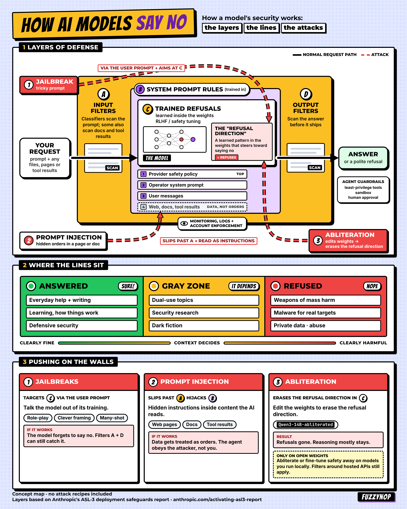

AI red teamer
Fuzzy
Nop
Josh Schwartz
The models are supposed to
say no.
I'm an offensive security leader, working on my own since March 2024. The work is jailbreaks, prompt injection, and AI agents that act outside their job.
I only test targets I am allowed to test. That is the whole point.
- @FuzzyNop
- Break it to understand it
- Hacker and artist
1 The work now
Jailbreaks
Tricky prompts. The aim is to talk a model out of the no it was trained to give.
See it on the mapPrompt injection
Hidden orders in a page, a doc, or a tool result. The model can read them as the job.
See it on the mapAgents off the job
An AI agent that acts outside the task it was given.
See it on the map2 The card
How AI Models Say No. The talk, drawn as one card. Layers, lines, and the push.

3 Two talks
4 HEACKERz
Hackers Healing Hackers
A community. The de-rolling talk sits with this idea: safety includes the people doing the work.
Open the talk5 The record
The company jobs came first. Short version here. Titles and dates are on the work page.
6 The other half
Looking for the art? The Fuzzy Place, the decks, and Security Theater Drama Club. Immersive rooms, long sets, and the crew. Open the art7 Find him
The public profiles are the door.